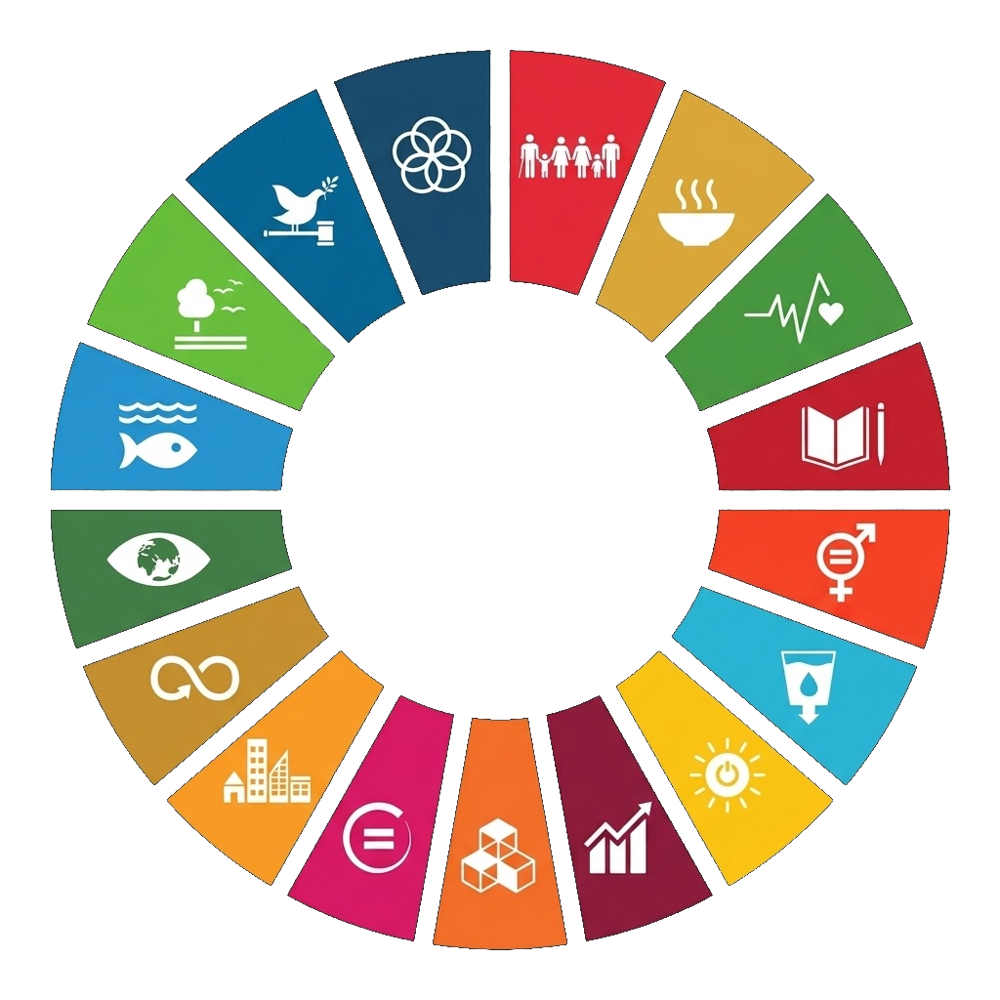

Ayak İzlerimiz
Çarkı çevirin, referanslarımızı keşfedin. Her segment bir SKH'yi, her hikâye gerçek bir dönüşümü temsil ediyor.
Referanslarımız hakkında daha detaylı bilgi almak için çarkı çevirebilirsiniz

Her segment 17 Sürdürülebilir Kalkınma Hedefinden birini temsil eder
Geniş Portföy